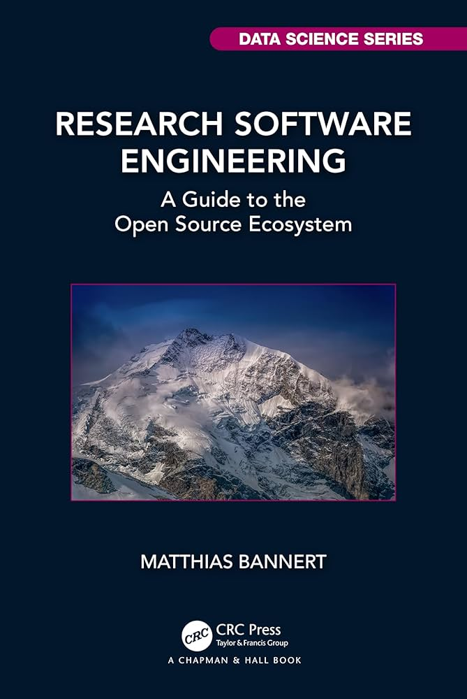

Research Software Engineering
A Guide to the Open Source Ecosystem
Preface

Note: This book is published by Chapman & Hall/CRC. The online version of this book is free to read here (thanks to Chapman & Hall/CRC), and licensed under the Creative Commons Attribution-NonCommercial-ShareAlike 4.0 International License. If you have any feedback, please feel free to file an issue on GitHub. Thank you!
One of the things that Baidu did well early on was to create an internal platform for deep learning. What that did was enable engineers all across the company, including people who were not AI researchers, to leverage deep learning in all sorts of creative ways - applications that an AI researcher like me never would have thought of. – Andrew Ng
The vast majority of data has been created within the last decade. In turn, many fields of research are confronted with an unprecedented wealth of data. The sheer amount of information and the complexity of modern datasets continue to point a kind of researcher to programming approaches that had not considered programming to process data so far. Research Software Engineering aims at two things: First, to give a big picture overview and starting point to reach what the open source software community calls a “software carpentry” level. Second, to give an understanding of the opportunities of automation and reproducibility, as well as the effort to maintain the required environment. This book argues a solid programming skill level and self-operation is totally in reach for most researchers. And most importantly, investing is worth the effort: being able to code leverages field-specific expertise and fosters interdisciplinary collaboration as source code continues to become an important communication channel.

Acknowledgments
I am thankful for the inspiration, help and perspectives of everyone who contributed to this book at its different stages. There are several people and organizations that I would like to thank in particular.
First, thank you to David Grubbs at CRC Press for getting me started. From our first meeting at useR! in Toulouse, France, David helped streamline writing a book, and he kept adding value throughout the process with his remarks and contacts. I would like to thank Achim Zeileis who also played an important role at the early stage of my book project. Achim inspired me to become a co-host for useR! which led to many experiences that became important to this book. Our discussions about teaching amplified my motivation to have good material to accompany my own course – which eventually turned out to be one of the most important drivers.
In that regard, I would like to thank all participants of my Hacking for … courses. Your insights, questions, feedback and semester projects have been invaluable to this project. Your field-specific expertise is inspirational not only to me, but also to readers of the book as it shows the broad relevance of the approach. I would like to thank ETH Zurich, in particularly the Department of Management, Technology and Economics (D-MTEC) and the KOF Swiss Economic Institute for hosting my ideas over the last 13 years. Thank you to educational developers Karin Brown and Erik Jentges; having teaching professionals with open ears and minds around helped to channel motivation and ideas into a course concept that continues to be popular among participants across departments and disciplines. Torbjørn Netland deserves credit for enabling this widespread interest. His early advice turned what was initially thought of as Hacking for Economists into Hacking for Social Sciences, which eventually became Hacking for Science.
Though this book is not exactly about the R programming language, I would like to thank the R community in particular because of its instrumental role in growing my own engagement and horizon of the open source ecosystem. My thanks go to statisticians Siegfried Heiler and Toni Stocker who pointed me to the R language almost 20 years ago. One of my most important learnings about how to leverage open source work may have come only 20 years later: In 2021, the community overcame the hurdles of the global COVID-19 pandemic that was unprecedented, at least in my lifetime, and held a virtual useR! conference that enabled a much larger and much more diverse group of participants to join (Joo et al. 2022).
Working with Rocío Joo, Dorothea Hug Peter, Heather Turner and Yanina Bellini Saibene has shown me the inclusion extra mile is not only worth the effort, but an inevitable mindset to bring our work as developers and scientists to the next level. Thank you, ladies! Thanks also to the local R user group in Zurich, Switzerland, who continues to show the practical relevance of open source through events. I want to mention the great people at my new employer, cynkra, too. Your influence on the community and therefore this book cannot be forgotten. Thank you for your support and open ears!
Last but not least, I would like to thank Emily Riederer for her time and patience discussing my thoughts and reviewing my drafts. Particulary, her ideas to streamline and balance my ideas at a stage where they were rather messy added great value. Admittedly, your constructive feedback has caused some extra work, but was instrumental to making this book useful and accessible to a wider audience – Thank you.